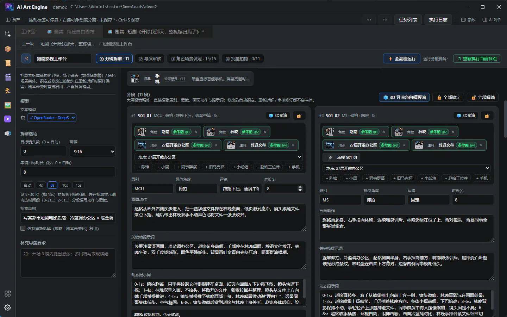
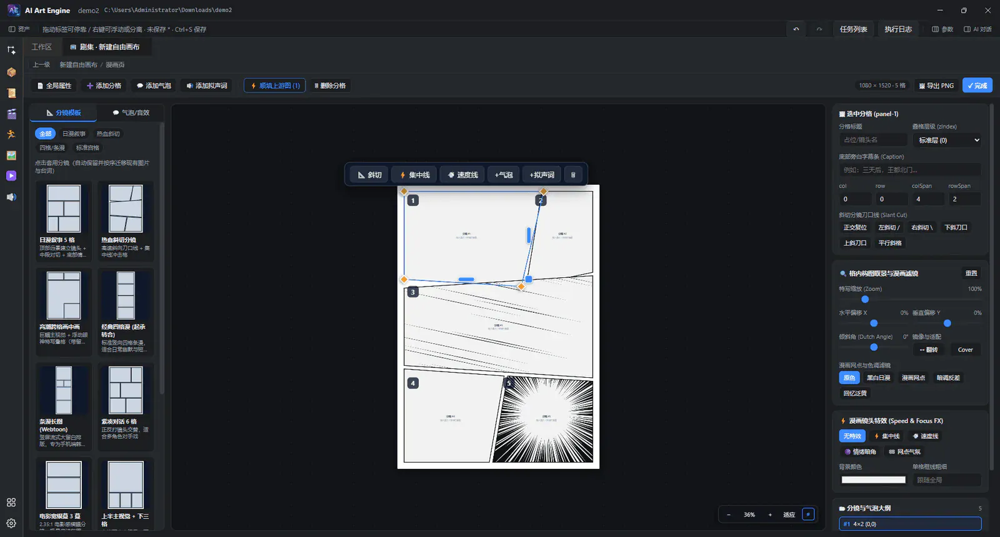
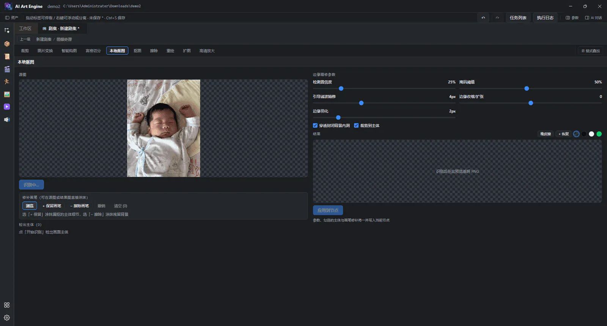
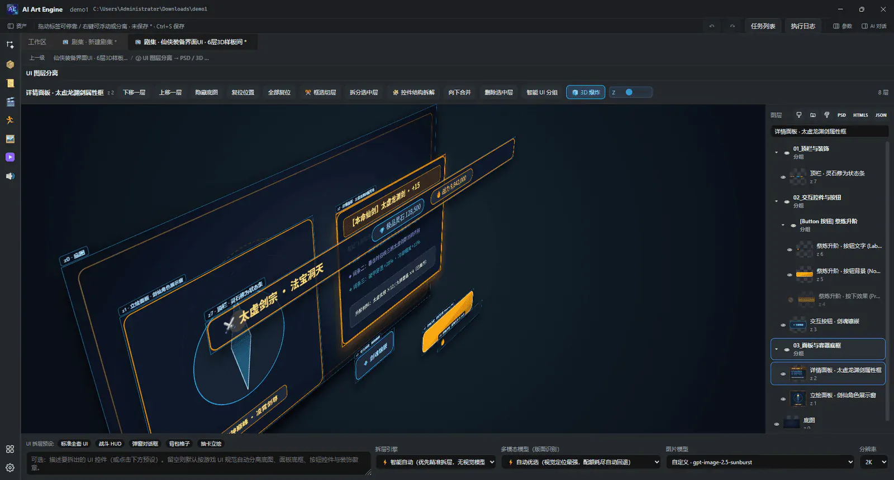

Manual · Workflow · v8.9.1
One-Click Workflow & node graph
Launch reusable pipelines in seconds from built-in presets, Skill Marketplace workflow bundles, or aiae:graph recipe PNGs; run the 5-stage 21-genre Film Workbench; and explore Game UI Layer Split & ui.atlasCompose, Machinations v2 Studio, rea-video viral remake, and script.run.
7. One-Click Workflow & PNG-as-Workflow
In AI Art Engine v8.9.1, you have three instant ways to launch a reusable pipeline (either as a host asset with clean boundary I/O or directly on the canvas):
-
Built-in presets & plain-language AI planning: open One-Click Workflow to preview the built-in “Viral Video Breakdown & Remake” (
builtin.video-breakdown-remake) preset out of the box, or describe your goal in natural language so a text model plans the node topology automatically. -
Skill Marketplace domain workflow bundles: install vertical pipelines — such as Short-Drama Full Pipeline (
short-drama/short-drama9), Game UI, E-Commerce, Game 3D Assets, and World Models — from the Skill Marketplace (see §5.7); AI Chat and MCP agents can also instantiate them programmatically viaskill_install+workflow_use_installed. -
PNG-as-Workflow (
aiae:graphrecipe drag-in): every exported PNG and official recipe card (such asassets/recipe/recipe1.png) embeds the complete node graph topology, parameters, and seeds inside a PNGiTXtchunk — drag anyaiae:graphPNG directly onto the canvas to restore the entire pipeline losslessly.
7.1 How to open
- Open or switch to any workspace (
workspace.json+project.json). - Click One-Click Workflow in the workspace “New” menu or top bar (or drag an
aiae:graphrecipe PNG straight onto the canvas).
aiae:graph recipe PNGs require zero AI keys; plain-language “Generate preview with AI” needs at least one configured text model. Install additional industry pipelines anytime from the Skill Marketplace (see §5.7).
7.2 Built-in presets, Skill Marketplace bundles & descriptions
-
Built-in preset: ships out of the box with “Viral Video Breakdown & Remake” (
builtin.video-breakdown-remake), wiringsemantic.analyze(4-axis forensic video breakdown) →semantic.rebuild(1:1 shot-matched remake + side-by-sidecompare.mp4) so you can drop in any reference short video and replicate its pacing and camera craft. -
Skill Marketplace domain bundles: Short-Drama / Comic-Drama Full Pipeline (
short-drama) & Single-Shot Polish (short-drama9) (powered by the 5-stage 21-genrefilm.workbench), Game UI (GDD →ui.split→ui.gen/ui.atlasCompose→image.layerSplitnativeTySh.psd), Batch Icons (image.iconPack), E-Commerce Livestream (ad variant matrix + layer split), Game 3D Assets, World Model (asset.spatialWorld→spatialWorld.export→director.stage), Comic Publishing (comic.page), Knowledge Talking-Head, and 2D Frame Animation. Every bundle includes a step-by-step Note node. - Workflow description: describe your goal in plain language (e.g. “forensic breakdown of reference video → restyle lead into wuxia heroine → timeline CapCut draft”); you can pick a preset first and customize the prompt.
- Default models: the text model drives AI planning; your chosen default image / video models populate the initial parameters of generated nodes.
7.3 Preview → create
- Click Preview template (built-in preset or installed Skill Marketplace workflow) or Generate preview with AI (needs a text model; shortcut Ctrl+Enter / ⌘+Enter).
- Inspect the nodes and link topology in the preview area; open the run log to watch the model's planning process.
- Confirm with Create workflow, then choose a save directory and name.
- The new host asset appears in the asset library; drag it onto a canvas to use it.
7.4 Using it after creation
- Drag it from the asset library onto the canvas → connect upstream text / images / videos to the host inputs.
- Double-click or Dive into the inner graph to fine-tune nodes, models and prompts.
- Select a boundary output or the host node and use “Add to tasks” to run the whole inner chain; it can run in parallel with other chains (see §8.3).
7.5 Film Workbench: 21-genre × 5-stage AI Comic Drama & Short-Drama pipeline
After instantiating “Film pipeline” (short-drama) or “Film · single-shot polish” (short-drama9) from the Skill Marketplace — or adding a
“Film Workbench” (film.workbench) node directly on the canvas — double-click it to enter the full-screen Dive workbench and run the 5-stage closed-loop production pipeline across 21 genre presets (P01–P21). See the
Short-Drama Guide and §9.5 Film Workbench details.

film.workbench): 21 genres (P01–P21), 5-stage loop, #variant wardrobe/prop anchors, cross-episode TTS voice binding & full-episode .mp4 export.- Five stage tabs & one-click full pipeline: switch across ① A+B Beat Breakdown / ② 11-Point Continuity Audit / ③ Cast, #variant & TTS Voice Binding / ④ Locked Batch Shoot & Vision QC / ⑤ Cover/Title Release Pack & Full Episode MP4; click “⚡ Run Full Pipeline” to execute all five stages end-to-end or review stage by stage.
-
① A+B Beat Breakdown (
breakdown): ships with 21 short-drama & comic-drama genre packs (P01–P21: urban comeback, war-god, suspense twist, xianxia cultivation, palace intrigue, cyberpunk, etc.), splitting scripts into A+B narrative/visual beat cards plus character / location / prop tables with per-shot durations (Auto / 4s / 8s / 10s / 15s) and shot locking. -
② 11-Point Continuity & Dialogue Audit (
review): enforces an 11-point continuity checklist (180-degree axis, eyeline match, shot-scale progression, wardrobe continuity, emotional arc, etc.) and a ≥67% dialogue coverage gate, automatically rewriting and re-auditing failed shots up tofilmReviewMaxRoundswhile skipping locked shots. -
③ Cast,
#variantAnchors & Voice Binding (cast): batch-generates turnaround sheets,#variantwardrobe / prop / state sheets (e.g.CHAR01#battle), location plates, global visual bibleSTYLE01, and cross-episode persistent TTS voice bindings with fingerprint caching. -
④ Locked Batch Shoot & Vision QC (
render): binds appearing entities as locked@1–@4visual anchors per shot, runs Vision QC auto-reshoots on defective keyframes, and renders image-to-video clips with lip-sync timing (supporting “Keyframes only” preview before incremental video rendering). -
⑤ Release Pack & Episode Export (
release): generates vertical/horizontal cover art, viral hook titles and tags, and muxes dialogue, subtitles and transitions into a complete full-episode.mp4(or feedsoutput.timelinefor JianyingPro / CapCut editable multi-track draft export). -
Single-shot polish (
film.shot): connect a “Shot” node tooutandout-cast, pick a shot viafilmShotRef, and route its prompt and@1–@4anchors into dedicated image generation, 10-in-1image.process, and video generation nodes.
8. Node graph
The node graph is the core orchestration surface. In scripts, shots, canvases, the director stage, host assets and similar scenes you wire nodes together into “input → generate → output” chains.
8.1 Add and connect
- Right-click empty canvas space, or press Space, then choose “Add node”.
- Drag a link out from a port; after releasing you can “select a node and connect”.
- Rewire: hold and drag an existing link (whichever end you grab is the one that changes), or drag out from an already connected input port onto another compatible port; release over empty space to disconnect. After marquee or multi-selecting links (Shift / Ctrl click), dragging one of them rewires several at once; dragging from an input port carries all of that port's incoming edges.
- Drag an asset from the asset library onto the canvas to create a reference quickly.
- Select a node or edge and press Delete / Backspace to remove it.
Image / video / audio / script gallery generation nodes have two outputs:
out (the currently selected single item, auto-connected by default) and
out-all (the whole history, a square port). Each successful run selects the newest item
automatically; click a history entry in the Inspector to change the current out.
Director stage edit nodes use two square outputs: out-shots (blocking
shots, images) and out-actions (motion captures, videos).
Legacy out / out-all links migrate to out-shots on load.
Structured directory ports use the dedicated types world /
worldEntities / beat (shown as world elements / world element entities /
shot) — don't mix them with plain text.
Port types must match: singular and plural don't interoperate.
image can't go into images, and the same applies to video /
voice / text. Select image / video / audio / text nodes
accept list ports only: feed them from an upstream out-all (or the director stage's
out-shots / out-actions); the default round out won't
connect. A script node's text also can't go straight into “Select text”.
Generation nodes support locking: when enabled the model call is skipped and the gallery or previous output is reused (toggle it with the lock icon on the node card or in the Inspector).
8.2 Toolbar and canvas interaction
- Select / pan · fit view · grid and snapping · align / distribute · auto layout.
- Link style: curve / orthogonal / hidden (the preference is remembered).
- Minimap: bottom-left overview with a viewport box; it can also be toggled when the layout bar is collapsed.
- Wheel zoom runs roughly 1%–1000%; clicking the zoom percentage resets related view habits.
- Execute / stop / add to tasks.
-
Project globals: right-click empty graph space and open “Global parameters” —
project name, visual style (up to 4 style reference images, picked from the default style library
or uploaded, including a “UI style” category), a global random seed (image / video generation
nodes follow it by default and can opt out individually, which makes runs reproducible) and the
generation cache root (results are written to
Cache/Images,Cache/Videos, etc., and aren't registered in the asset library automatically). - Prompt editor reference preview: hovering a referenced node's thumbnail pops a preview — images are shown size-limited and text shows the opening paragraphs (sidecar txt / md content such as scripts is read automatically).
Image previews on node cards and in the Inspector are shown in full with letterboxing, so they're never cropped by a different aspect ratio.
8.3 Execution and the task queue
| Method | Description |
|---|---|
| Toolbar “Execute” | With a selection it runs the selected nodes and their upstream; with none, it asks for confirmation before “Execute all nodes”. |
| Hold C | Opens the execution ring: run current / re-run / skip upstream / force upstream / add to tasks / stop. |
| Node right-click | Run current · re-run · stop. |
| Task list | Background workflow queue. Selecting an output terminal then “Add to tasks” runs only that sink's upstream; with no output selected it runs the union of every output chain in the graph. |
done. The sinks
themselves still run individually. To force a shared node to re-run, clear its run state or unlock
it before queueing.
Group: Ctrl+Shift+G; ungroup: Ctrl+Shift+U.
8.4 Fault-tolerant run mode
Single-node debugging stays strict: a failing node stops the run immediately and
reports the error, which is best for isolating problems. But long chains such as
whole-graph runs / add-to-tasks / agent pipelines automatically enable
fault-tolerant mode: a failing node falls back to cached or gallery outputs, is
marked degraded, and downstream keeps executing — a long batch doesn't
restart just because one node hiccupped.
- Degraded nodes are flagged in the run log, pipeline overview and node state
(
degraded+ failure reason). - Best for “partial failure is acceptable” batch scenarios; when debugging, use single-node execution to keep the strict fail-fast behavior.
8.5 Node types at a glance
Generation / assets
- Image generation · video generation · audio generation · script generation · novel outline · novel serialization · Film Workbench · Shot · game economy · numerical system · planning doc generation · director stage edit · canvas edit · 3D model generation · spatial world generation · 3D mesh processing (rigging / rig check / animation retarget / split / part completion / retopology / texture / format convert) · 2D frame animation · 2D stage · SVG generation · SVG bake · decisions · model (reference) · host asset
- 3D model generation: text / upstream reference images → a 3D model asset (Meshy, Tripo, Rodin (Hyper3D), Luma AI, Lux3D; text-to-3D / image-to-3D, with multi-image to 3D on some); submit async → poll → download, and the result can feed the director stage or downstream nodes, with write-back binding persistence and cancellation. Generation nodes output geometry only — rigging and the rest moved to the 3D processing nodes below (no inline “Generate rig” since 6.4.1).
-
Spatial world generation (
asset.spatialWorld): text, 1–4 reference images or one reference video → an explorable 3D world (World Labs Marble; four models — 1.1 / 1.1-plus / 1.0 / 1.0-draft, the last two from the previous generation). The four input kinds are mutually exclusive (text / single image / multi-image of one scene / video), and when both a video and images are connected the video wins (same rule as lip sync); reference videos should be mp4 / webm / mov / avi and are capped at 100MB each (an upstream hard limit). The node card also offers a panorama mode (is_pano: auto-detect a 2:1 equirect panorama / force / off — single image only, and a panorama gives the model complete spatial information, usually more accurate than a plain photo), verbatim (disables upstream recaptioning so your brief is sent as written) and a seed. Without instructions the upstream recaptions the input itself, so the same reference image can yield slightly different worlds twice; tick “verbatim” and pin the seed to keep it reproducible. It uses the same async submit → poll → download path as 3D generation, and the world's GLB mesh is registered as a model asset (landing inCache/Modelsby default, exactly like 3D generation) — but to feed the director stage or downstream 3D processing nodes you must go through the “World export” node: the world port is strictly typed (spatialWorldconnects only tospatialWorldand is not implicitly compatible withmodel), so wire the world into the export node first and use its exported mesh from there. Multi-image references are capped at 4, and local images / videos are uploaded to World Labs managed storage by default (the official media-asset flow:/marble/v1/media-assets:prepare_uploadthen a PUT to the signed URL), so no object storage is required; object storage is only a fallback when the hosted upload fails, and if both fail the error carries both reasons. One generation takes about 5 minutes and is billed in credits. As for the artifacts: the main output is the world's GLB mesh (the coarse collider mesh, 100–200k triangles), and the two assets that ship with the world are written as same-name siblings:*.spzgaussian splats (about 2M splats, Marble's native format — the preferred import for Unreal / Unity / Blender / Houdini) and*.pano.pnga 360 equirectangular panorama (2560×1280, reusable as a 2D panorama input). Both are free of extra credits, and their paths appear in the run log and the node inspector (select the node to copy a path). PLY splats or the HQ textured mesh come from the “World export” node (spatialWorld.export): wire the spatial world node's output (its port type is spatial world) into itsin-worldand pick what to export in the inspector — high-quality mesh (GLB: textured ~600k triangles / vertex colors ~1M triangles; an asynchronous upstream export that takes up to about an hour, is rate limited to 4 requests per hour, and is billed separately; the result is registered as a model asset whose output port ismodel— feed the director stage or downstream 3D processing nodes from there) or PLY splats (a synchronous upstream conversion written as a same-name sibling of the world GLB,world.ply; it is not registered as an asset — but you can import it into the asset library, or wire its relative path straight into the director stage's 3D model input port, where the bundled Spark renders it on the stage: see 12.7 Gaussian splats; for engine imports still prefer the SPZ saved automatically). The export node only accepts theworld_idproduced by an upstream world generation node; without it the node fails loudly rather than exporting someone else's world. -
3D mesh processing (nodes): 3D rigging (Meshy / Tripo Rigging
API, with Mixamo or Tripo bone naming and GLB / FBX output), 3D rig check (free;
returns
riggableplus the recommended rig type), 3D animation retarget (Tripopreset:walkpresets / Meshy action-libraryaction_id, with the library loadable right in the panel), 3D mesh split (mesh / smart segmentation, listing the resulting part names), 3D part completion, 3D retopology (Tripo smart / basic tiers, Meshy remesh), 3D texture (incl. Meshy retexture) and 3D format convert (GLTF / FBX / USDZ / OBJ / STL / 3MF with FBX presets, pivot-to-bottom, UV packing). A per-provider capability matrix filters the UI: Tripo covers all 8 ops, Meshy covers 5, provider dropdowns only list vendors implementing that action, and the Inspector hides parameters the selected vendor does not understand. Two hard constraints: part completion only accepts a segmentation task id and retarget only a rig task id; when a task id belongs to another vendor (say a Tripo split feeding a Meshy texture node) the app falls back to uploading the model for a public URL. - Host asset: bring an existing asset (image / video / audio / script / director stage, …) into the current canvas as a node — the output port type is that asset's port type; double-click a host asset node to dive into its internal workflow (see 8.7 Host assets and Dive).
-
Decisions: takes upstream text and asks an OpenRouter decision model a set of typed
questions (
noulyes/no,choiceone-of,scoreon an ordered scale). It has one text output — the verdict summary (e.g.is_bug=yes(0.96) team=payments(0.84)) — so downstream text nodes keep working; the full verdicts (per-option probabilities, confidence, thresholds) stay on the node and show up as probability bars under “Last verdicts” in the Inspector. The question list and the thresholds (noul yes threshold / choice min confidence / score min position) are edited there too.
Output
- Image / video / audio / script output · director stage output · final timeline
Utility & scripting
-
Note · text · Script run (
script.run) · select image / video / audio / text · grid select · motion cell select · prompt optimizer · image-to-prompt · UI screen breakdown (ui.split) / UI screen generation (ui.gen) / UI Atlas Compose (ui.atlasCompose) / UI Component Library (ui.componentLib) · frame animation sheet · comic page · ad variant matrix · bundle -
Script run (
script.run): embedded JavaScript execution node exposinginputs(upstream text, JSON and media metadata),ctx(workspace & node context),fetch(HTTP / webhook requests) andlog(execution log output) for custom JSON parsing, dynamic prompt assembly, conditional routing and glue logic directly inside the graph. - Bundle: gather several upstream outputs (image / video / audio, …) into one group so they can be fed to an output or downstream node as a whole; also handy as a temporary organizing tool.
Motion (under the motion group)
-
Frame animation sheet (
frame.animGen): supports four sprite-sheet generation channels — Direct Video-to-Sheet (uniformly sample frames from a reference video into a Sprite Sheet), Video Pose-Guided AI Restyle (sample motion frames while restyling with a character reference sheet), Multi-Frame Assembly (align and pack loose upstream frames into a clean grid), and AI Action Preset (double-click to pick character / FX / martial-arts presets and generate via an image model); includes corner-sampled chroma-key background removal and baseline / centroid frame stabilization. -
2D frame animation (
anim.2d): takes a sprite sheet, sets row / column parameters in the Inspector, and plays a live frame-by-frame preview on the card; double-click to open the 2D Frame Animation Dive Workbench with auto chroma-key background removal (tolerance & feathering), baseline / centroid stabilization, onion skinning, bad-frame culling, custom FPS and loop modes (forward / ping-pong / once), plus 1-click export of a transparent GIF or cleaned Sprite Sheet PNG. -
2D stage (
stage.2d) & Image align (image.align): powered by AI bone alignment (Alpha morphology + YOLOv8-Pose) for 2D character part cutting, IK/FK rigging, pose driving, multi-frame pixel alignment, and 1-click Spine 2D (skeleton.json+.atlas) export for Unity, Godot, and Cocos; plus SVG generation (svg.gen) and SVG bake (svg.anim) for vector art and frame baking.
Comics & ads
-
Comic page (
comic.page): double-click to open the full-screen Comic Layout Dive Workbench with multi-page management (add / duplicate / delete / reorder pages), classic panel layout templates (4-panel, 6-panel, diagonal dynamic cuts) and free span dragging; built-in speech balloons (ellipse / thought cloud / burst shout / narration box with draggable tail tips), SFX text and screentone / speed-line / sticker overlays; supports single-panel AI generation or reading-order upstream backfill, and exports the current page PNG, all pages PNG or a vertical webtoon strip PNG. - Ad variant matrix: set the product description and aspect ratio, then double-click to enter variant dimension configuration and comparison preview, producing multiple ad variants on the same theme in one run.

QC & rework (retired)
Image editing & Game UI engineering (under the image / UI groups)
- Image processing (10-in-1) · icon pack · multi-angle edit · lighting effects · portrait texture adjust · portrait retouch · mood adjust · layer separation · UI Atlas Compose · UI Component Library
-
Image processing (
image.process): consolidates the 10 formerly separate image editing nodes into a single Image Processing Workbench. Double-click the node card to enter the Dive editor and switch across all 10 tools from the top bar (or via the “Processing tool” dropdown in the right-hand Inspector); the node card subtitle updates live to show the active tool:-
Local pixel & vision tools (no cloud image model call):
Crop (
crop— free or aspect-locked cropping), Image transform (transform— pan, wheel zoom, rotation slider + ±90° buttons, horizontal / vertical flip, match-source bounding-box expansion or fixed aspect / tier size with transparent / white / black fill), Smart compose (compose— saliency and composition-guided framing), Grid split (gridSplit— slice a 9-grid / 4-grid sheet by rows, columns and border trim into a list of individual images onout-all), Local cutout (cutout— offline background removal via local ONNX segmentation / portrait models). -
AI generative editing tools (calls your selected image model):
Matte (
matte— AI subject matting), Erase (erase— brush mask object / watermark removal), Redraw (redraw— local mask + prompt inpainting), Expand (expand— outpainting to a wider canvas / aspect ratio), HD upscale (upscale— AI super-resolution and detail enhancement, with 2K / 4K tier selection and before/after preview in both Inspector and Dive).

10-in-1 Image Processing Workbench (local cutout, edge refine, heal brush & AI redraw/expand/upscale) -
Local pixel & vision tools (no cloud image model call):
Crop (
-
Icon pack (
image.iconPack): batch-generate game item, skill and UI icon sets with rarity frame templates, background cleanup and sprite-sheet packing. -
Portrait retouch (
image.portrait): PixCake-style retouching upgraded with 4-band wavelet frequency-separation skin retouching (preserving natural pore micro-texture) and 7 camera / film color sciences (ARRI Alexa, Kodak Portra, Fujifilm, Hasselblad Natural Color, Leica, Sony Venice, RED IPP2). Double-click the node card to open a dive editor with 16 tool groups along the top rail: heal (blemish / under-eye / wrinkles / shine / red eye / stray hair), skin (4-band wavelet smoothing / pore texture / evenness / denoise), tone (whiten / rosy / de-yellow / warmth), face reshaping (slim / jawline / chin / eye size / eye spacing / double eyelid / nose / lips / brows), eyes (catchlight / whitening / pupils), makeup (7 looks with intensity and tone), body (shoulder-neck / waist / leg length), lighting (fill / rim / contour / ratio / light temperature / tone grade), colour (saturation / temperature / tint plus 7 camera/film color sciences & 11 LUTs), texture (sharpen / clarity / grain / soft focus / vignette), region (manual boxes plus a note and the local-scope switch), background (keep / solid / gradient / by description / blur only), ID photo (10 specs, background colour, 5-inch sheet), AI enhance (in-editor model calls for smart erase / background swap / makeup boost / upscale, stored as rollback-able node versions), presets (12 built-ins + import/export) and export (output size / DPI). Intensities are five-step segmented buttons (off / light / standard / strong / max); makeup looks, LUTs, background handling and ID-photo specs are named options. The editor shows the exact prompt sent to the model live, copyable and collapsible. - How portrait retouch runs, and how it stays local: the parameters compose a prompt and the node calls the image model you pick (or runs local 4-band wavelet skin retouching & camera color science); ID photos are then cropped to spec and optionally tiled to a 5-inch sheet. Wiring several images into one node retouches them in one batch with the same settings (up to 24) and face landmarks are cached per source-image fingerprint. Framing follows the source image (its ratio is mapped to a standard aspect the model accepts, so a portrait shot never comes back square), and "output size = auto" renders at the source's size and then fits the result back to the exact source pixel dimensions (picking 1K / 2K / 4K instead keeps that tier's size). "Affect only the matching area" is on by default: the model renders the whole frame, then the result is feathered back onto the original through the face (with neck) / person / manual-region-box mask, so everything else keeps the exact original pixels — smoothing no longer blurs the clothes and background, and slimming no longer warps the scene. Solid / gradient backgrounds are flattened locally by default: after generation the local person segmentation forces everything outside the subject to the target background, so the result is guaranteed clean (residue the model forgot is wiped) — ID-photo background colours work the same way, and you can switch it off in the Background group. Background swaps, ID photos and colour grading are whole-frame by nature and stay whole-frame (otherwise the mask would crop those global effects); when face landmarks or the segmentation model are missing, that part falls back to the whole frame with a line in the run log — never silently. The switch sits at the top of the Region group; turn it off to go back to whole-frame.
-
Portrait editor: before/after comparison (
⇆hold to see the upstream source;◐split compare with a draggable divider), wheel zoom, view rotation with Shift+wheel or[], Space / middle-drag panning (double-click empty space or click the zoom percentage to fit, click the angle readout to reset rotation) and undo/redo. In the Region group you draw boxes right on the image (six kinds: blemish / smoothing / brightening / slimming / background / erase); each box becomes a positional phrase such as "a small patch in the upper left" in the prompt. "Save & generate" no longer closes the window: the button and the canvas show progress, failures stay in the window, and when it finishes the left image switches to the product so you can compare it with the previous one. Tool groups with an unmet dependency are greyed out with an explanation in the tooltip and the parameter panel (7 groups need face landmarks, Background needs the segmentation model, Body needs the pose model). The in-editor AI enhance actions (smart erase / new background / makeup boost / upscale) call the image model directly and store their results as rollback-able node versions; the inspector carries the shared output preview (thumbnails / full screen / save to library / pick a version), and reopening the panel defaults to the node's current output. -
Layer Split Workbench (
image.layerSplit): supports four production decomposition modes — ① Game UI Control Split (ui): recognizes 16 standard HTML5 / Unity UI Toolkit control classes (button,toggle,slider,progress-bar,input-field,scroll-view,panel,modal-dialog,tab-bar,list-item,slot-grid,icon-badge,avatar-frame,tooltip-bubble,hud-bar,text-label), runs cross-platform local offline OCR (Windows WinRTWindows.Media.Ocr/ macOSVision.framework/ Linuxtesseract) and cloud VLM OCR to extract text, core glyph fill (color) and outline (strokeColor/strokeWidth), inpaints clean 9-slice plates (nineSlice), offers an interactive 3D exploded preview, and synthesizes:hover/:activestates; exports a 2-level nested.psdwith native PhotoshopTySheditable text layers plus Unity UI Toolkit (.uxml/.uss) · Unity UGUI (.cs) · Godot 4 (.tscn) · HTML5 code; ② 2D Rig Part Split (rig2d): semantic body-part cutting + occluded edge dilation inpainting + auto bone hierarchy for 2D Stage & Spine export; ③ Scene Depth Split (scene) and ④ Auto Layer Split (auto) (Seedream 5.0 Pro cloud decomposition or local instance segmentation + LaMa background inpainting).
Layer Split Workbench (3D exploded view, 2-level nested hierarchy tree, native TySh PSD & engine UI code export) -
Real Sprite-Atlas UI Composition & Component Library (
ui.atlasCompose&ui.componentLib): replaces blurry full-screen diffusion text with true sprite-atlas engineering —ui.componentLibmanages reusable 9-slice frames, rarity slots, button plates and currency badges, whileui.atlasComposeassembles pixel-crisp multi-layer game screens from real sprite-atlas slices and sharp vector typography, pairing seamlessly withimage.layerSplitfor nativeTySh.psdand Unity UGUI/UXML / Godot 4.tscnexport. -
PNG-as-Workflow (
aiae:graphsteganography): exported PNGs automatically embed the full node graph topology and seeds inside a PNG iTXt chunk; drag any exported PNG (such asassets/recipe/recipe1.png) back onto the canvas to restore the entire pipeline. -
Retouching / image editing happens in Dive; options and prompts are
written back to the node
paramsin real time and stay visible in the Inspector. Preview opens as a dialog rather than taking a Dive tool slot.
Audio (under the voice group)
- Voice · multi-speaker dialogue · sound effect · music · select voice
-
Voice (
asset.voice): TTS dubbing. The text in the instruction box is what gets read aloud, so this node shows no system prompt (otherwise that instruction would be read out too). It accepts text and a reference image upstream (Ark voice design uses the first image); the voice is picked per node in the instruction panel, and an empty voice falls back to the model default. -
Multi-speaker dialogue (
asset.dialogue): synthesize a whole dialogue in one call (ElevenLabs/v1/text-to-dialogue). Write onespeaker: lineper line (both ASCII and full-width colons work); lines without a colon keep the previous speaker (narration / continuous monologue). Bind a voice per speaker under “speaker voices” in the Inspector; unbound speakers fall back to the node default. A missing voice is reported naming the segment index and the speaker — it never silently uses the wrong voice. The output is one dialogue audio file (a voice asset). -
Sound effect (
asset.sfx): uses the dedicated sound-effect endpoint (ElevenLabs/v1/sound-generation). Describe the sound itself (“rain falling on a tin roof”), not a spoken line. The Inspector offers “seamlessly loopable” (common for ambience), “expected duration” (spec range 0.5–30 s) and “prompt influence” (0–1, default 0.3). Files land inCache/Sfx. The endpoint’s model is a single fixed value (eleven_text_to_sound_v2), so the dropdown on the card actually picks which provider instance to use. With no provider available it says so explicitly instead of falling back to speech synthesis. -
Music (
asset.music): composition / BGM. Text only (a composition brief plus optional lyrics) — it does not use voices. Models come from the “Music” tab in Settings (kept separate from the “Audio” tab): OpenRouter (Google Lyria 3), ElevenLabs (music_v2_5and friends), MiniMax (music-3.0/music-2.6), DashScope (fun-music-v1). The Inspector offers an “instrumental (no vocals)” toggle and a lyrics box (supports structure tags such as[Intro]/[Verse]). Files land inCache/Music. Music and voice are two separate modalities: the music dropdown never lists TTS models and vice versa. -
Select voice (
voice.select): pick one voice from several upstream voices as the current output — commonly used in multi-branch dubbing flows.
Video editing & forensic viral remake (under the video group)
-
Viral Video Breakdown (
semantic.analyze) · Viral Video Remake (semantic.rebuild) · lip sync · frame pulling · segment reshoot; frame pulling and segment reshoot open sub-windows on double-click (pull station / reshoot station), sharing the “double-click to open a sub-window” interaction with image editing. -
2-Node Forensic Video Breakdown & 1:1 Viral Remake (
rea-video:semantic.analyze→semantic.rebuild):-
①
semantic.analyze(4-axis forensic breakdown): drop in any reference short video to run four parallel forensic axes — WhisperX word-level ASR, PySceneDetect hard-cut & transition detection, Librosa BPM & beat-grid tracking, and Demucs vocal/BGM stem separation — paired with 3-frame VLM camera/lighting/acting forensics per shot and clean-plate burned-in subtitle removal. -
②
semantic.rebuild(1:1 viral remake & side-by-side comparison): combines the upstream forensic blueprint with your custom cast/product anchors to re-shoot every beat on exact timing and export both the remade video and a synchronized side-by-sidecompare.mp4(matching the built-inbuiltin.video-breakdown-remakepreset).
-
①
- Frame pulling: connect an upstream video and double-click to open the pull station, browse frame by frame and grab / annotate key frames for storyboards or prompts.
-
Segment reshoot: connect the source video and double-click to open the reshoot
station, mark the start / end time to change and describe the change; running it reshoots only
that range (Seedance 2.5 timestamp-level editing) and leaves the rest untouched. The prompt box
supports
@references to port media, and the video model can be picked on the right.
Film pipeline (under the film group)
- Film Workbench · Shot
-
Film Workbench (
film.workbench): unified 5-stage, 21-genre (P01–P21) AI Comic Drama & Short-Drama workbench node. Double-click the node (or click “Open Film Workbench” in the Inspector) to enter the full-screen Dive workbench chaining all five stages: ① A+B Beat Breakdown (breakdown— splits scripts by genre pacing into shot size, camera move, duration, dialogue and entity lists, with shot locking) → ② 11-Point Continuity Audit (review— enforces an 11-point continuity checklist and a ≥67% dialogue coverage gate, automatically rewriting & re-auditing failed shots) → ③ Cast,#variant& Voice Binding (cast— generates turnaround sheets,#variantwardrobe/prop states, location plates,STYLE01visual bible, and cross-episode TTS voice bindings with fingerprint caching) → ④ Locked Batch Shoot & Vision QC (render— binds appearing entities as@1–@4visual anchors per shot, runs Vision QC auto-reshoots on keyframes, and renders image-to-video clips) → ⑤ Release Pack & Full Episode MP4 (release— generates cover art, hook titles/tags, and exports the complete muxed.mp4episode). Both the Inspector and the Dive top bar let you switch the execution scope (current stage vs.⚡ Run Full Pipelineacross all five stages) and support “Auto” video duration following per-shot breakdown seconds. Input ports arein(script text) andin-image(optional reference images); output ports includeout(storyboard),out-cast(filmCastlibrary),out-sheets(design sheets),out-images(all keyframes),out-videos(all shot videos) andout-text(readable shot list / audit report). -
Shot (
film.shot): single-shot extraction and polish node. Connect its inputs to the Film Workbench'sout(storyboard) andout-cast(cast library), specify a shot number (such as"1") or shot ID (such as"S01-02") infilmShotRef, and it outputs that shot's keyframe prompt (out, with built-in@1–@4reference mapping), appearing cast & location sheets (out-refs) and motion prompt (out-motion) to drive downstream “Image generation” → (optional “Image processing”) → “Video generation” nodes for single-shot polishing.
World models (under the world group)
- Spatial world generation · spatial world export
-
Spatial world generation (
asset.spatialWorld): text, 1–4 reference images or one reference video → a walkable 3D world (World Labs Marble; 1.1 / 1.1-plus / 1.0 / 1.0-draft). See the detailed notes under “Generation / asset nodes” above and the worked flow below. -
Spatial world export (
spatialWorld.export, World Labsworlds/{id}:export): turns a world into a mesh that downstream nodes accept. Spatial-world ports are strictly typed (aspatialWorldport only connects tospatialWorldand does not implicitly acceptmodel), so going “world → Director Stage / 3D processing” must pass through this node. Two modes:- Mesh (default): HQ mesh → GLB, either textured (about 600k faces) or vertex-coloured (about 1M faces). The result is registered as a model asset that feeds the Director Stage or the 3D processing nodes directly. The upstream service is asynchronous, takes up to about an hour, is rate-limited to 4 calls per hour and is billed separately.
-
Gaussian splat (PLY): the official synchronous conversion writes a PLY next to the
world output in the same directory and under the same name (
world.ply), with an optional resolution (full_res / 500k / 150k / 100k). PLY has no preview channel and no matching asset type in the app, so it is not registered as an asset — only the path and a log line are written back, and the upstream world output is passed through so the chain does not break on the canvas.
Game mechanics, economy & design specs (Machinations v2 Studio)
- Game economy (Machinations v2) · numerical system · planning doc generation · novel outline · novel serialization
-
Game economy — Machinations v2 Studio (
game.economy): 100% Machinations semantically aligned gameplay mechanics and system-dynamics simulation studio. Double-click the node card (or open it from the Inspector) to enter the full-screen Machinations v2 Dive Studio:-
100% Machinations semantic alignment (10 primitives, 8 state modifiers & pool policies): supports
Source,Pool(FIFO / LIFO / Shuffle policies & multi-color resource filters),Converter,Drain,Gate(conditional & per-unit probabilistic / dynamic pity gates),Trader,Register,Delay,QueueandEnd(win / loss conditions), wired withresourceedges and 8statemodifier semantics (node/label modifiers, range guards, multipliers,*/!triggers and inverse activators;converter/source → poolalways adds resources, while HP loss wireshp_pool → drain). - Lossless Simple Macro ↔ Pro Blueprint toggle: switch anytime between a clean executive macro view (Simple Macro) and the full state-modifier / formula-register engineering view (Pro Blueprint) over the exact same underlying graph without losing a single parameter.
-
120fps Bezier slope diamond (
◆) & direct curve-drag inverse Goal-Seek solver: grab output curve handles or drag the Bezier slope diamond (◆) directly on the simulation chart — the inverse Goal-Seek solver back-solves and writes upstream growth formulas such ask * pow(STEP, p)at 120fps in real time, letting designers sculpt the target feel first and derive exact math automatically. - 59 verified building blocks & draggable formula modal: ships with 59 validated building blocks across 7 domains (soft/hard gacha pity, armor mitigation, idle production lines, RPG XP curves, live-stock shops, etc.) with collision-free ID and formula remapping, plus a draggable Formula Editor modal with rainbow brackets and live slider tuning.
-
Monte Carlo P10/P50/P90 bands, 2D sensitivity heatmap & Quick-Fix diagnostics: run interactive ticks, utility AI bots (
botMode), batch Monte Carlo P10 / P50 / P90 confidence bands, a 2D parameter sensitivity heatmap, and inflation / starvation / deadlock health audits with 1-click Quick-Fix actions (economyDiagnostics). -
Zero-code playable HUD card prototype & multi-format export: flip any economy diagram into a zero-code playable HUD card prototype to test loop pacing firsthand, and export auto-fitted PNG, vector SVG, telemetry CSV, and runtime Unity C# / Godot GDScript code. On the canvas,
outemits a topology + curve preview image whileout-textfeedsin-economyongame.numerical,novel.outline,asset.novelorasset.gameSystem. -
Focused-by-default AI Chat & MCP rule: asking AI Chat or MCP (
machinations_studio) to design a game mechanic creates a single focusedgame.economynode on theBaselayer by default; multi-layer full-system diagrams are built only when explicitly requested, andasset.gameSystemis created only when you explicitly ask for a GDD.
-
100% Machinations semantic alignment (10 primitives, 8 state modifiers & pool policies): supports
-
Numerical system (
game.numerical): micro-combat simulation and stat-table workbench covering damage multiplier marginal returns, entity stat budgets, gacha soft/hard pity expectations, power envelopes vs. enemy scaling walls, and turn/ATB/deck combat kernels (automatically switching to clean domain data tables for non-combat specs). Accepts upstreamgame.economyonin-economyand outputs numerical specs onout-text. -
Planning doc generation (
asset.gameSystem): double-click to open the Game System GDD Dive Workbench with 8 genre templates and a 100-point engineering QA audit across six sections (Overview, Goals, P0/P1 Features & Edge Cases, UI Wireframes & 9-slice specs, UI Requirements, Data & Formulas). Optionally accepts upstreamgame.economy(in-economy),game.numerical(in-numerical) orasset.novel(out-all → in), and feedsui.split→ui.gen/ui.atlasComposeto build multi-screen game UIs. -
Novel outline (
novel.outline) & Novel serialization (asset.novel): generate a global World Bible, character roster and per-chapter outlines onnovel.outline, then broadcastoutinto Markov-chained chapter nodes (Ch.1 → Ch.2 → Ch.3) combining previous-chapter state transfer (in), chapter outline slices (in-outline), macro economy (in-economy) and numerical power locks (in-numerical).
Others
- Graph plugin sample (loaded only for local debugging; absent from official installers)
8.6 Typical node workflows
-
1:1 viral video forensic remake: reference short video →
semantic.analyze(4-axis forensic breakdown + clean-plate subtitle removal) →semantic.rebuild(swap in your cast/product anchors to re-shoot beat-for-beat and export both the remake and side-by-sidecompare.mp4; matchesbuiltin.video-breakdown-remake). -
21-genre 5-stage AI Comic Drama / Short-Drama pipeline: script → “Film Workbench” (
film.workbench, chaining A+B beat breakdown, 11-point continuity audit,#variantcast & TTS voice binding,@1–@4locked batch shoot + Vision QC, and cover/title release pack + full-episode.mp4; matches the Skill Marketplaceshort-dramabundle); wire “Shot (film.shot)” → image generation → 10-in-1image.process→ video generation for single-shot polish. -
Game UI atlas composition & native
TyShPSD export:ui.componentLib+ui.atlasComposesprite-atlas composition (or full-screen UI generation) →image.layerSplit(16 widget classes, offline/online OCR fill+stroke extraction, 9-slice clean plate inpainting, 3D exploded view) → export native editable-text.psdplus Unity UGUI/UXML & Godot 4.tscn. -
Image / video & 10-in-1 image processing: connect upstream references into the generation port → reference
them with
@in the prompt → execute → pipe into “Image processing” for crop / transform / local cutout / redraw / expand / upscale → export the result with an output node. To build video and reference video from scratch on a free canvas, see the dedicated guide. -
Final cut & CapCut draft export: Film Workbench / video node outputs → open the 6-tab NLE timeline (
output.timeline) for GPU/FFmpeg effects, LUT grading, DOTween keyframes and subtitles → render MP4 or export an editable JianyingPro / CapCut multi-track draft. -
Dubbing (single character & multi-speaker dialogue): use “Voice generation” for single-character lines (spoken verbatim) or “Multi-speaker dialogue” with
Alice: lineper line and per-speaker voice bindings in the Inspector to synthesize a natural continuous exchange in one call. -
Sound effects & score / BGM: “Sound effect generation” describes the sound itself with optional seamless looping (
Cache/Sfx); “Music generation” uses models enabled on the Settings “Music” tab with optional structured lyrics (Cache/Music), ready to drag onto timeline tracks. -
Walkable 3D world: “Spatial world generation” (text / 1–4 reference images / one
reference video) → “Spatial world export” → feed the exported mesh into the 3D Director Stage to block
camera moves and record offscreen
.webmwhite-box motion videos, or into 3D processing nodes (you cannot skip the export node). -
Machinations v2 Goal-Seek simulation & GDD: drop a single “Game economy” (
game.economy) node to sculpt growth curves at 120fps with inverse Goal-Seek, inspect Monte Carlo bands & 2D sensitivity heatmaps, playtest the zero-code HUD card prototype, and export PNG/SVG/CSV or Unity/Godot scripts; wiregame.economy+game.numerical→asset.gameSystem→ui.split→ui.atlasComposewhen you also want a full GDD and multi-screen UIs. -
One-Click Workflow, PNG recipes & export to Skill Marketplace: create a host or drag in an
aiae:graphrecipe PNG → Dive to fine-tune → add to tasks; click “Export as Marketplace Workflow” in the top bar to package any workflow into a ready-to-publish Skill Marketplace bundle (manifest.json+workflow.json+README.md).
8.7 Host assets and Dive
A host asset (including One-Click Workflow output, Skill Marketplace workflow instances, and selection wrappers) exposes only boundary inputs / boundary outputs on the outside; double-click or Dive into it to edit the full inner topology.
- Boundary outputs map one-to-one onto sinks: several same-type results (e.g. multiple character sheets) each get their own outlet instead of being merged into one.
- Note-style text nodes aren't exposed as host outlets by default.
- The whole inner chain can be queued in the task list; a host node also participates as a black box in larger flows on the canvas.
- Dedicated workbenches — Film Workbench (5-stage), Game Economy (Machinations v2), Game System GDD, Image Processing (10-in-1), Layer Split & UI Atlas Compose, Portrait Retouch, Comic Page Layout, 2D Frame Animation and 2D Stage — operate inside Dive and write options back to node parameters in real time; both complex canvases and any Dive view support one-click immersive fullscreen via the top-right button or F11 (Esc to exit).